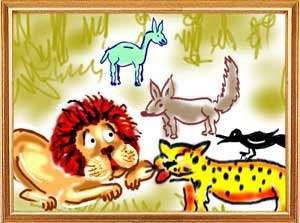

In a far off forest, there lived a lion named Madotkata served by a leopard, a jackal and a crow. One day they sighted Kradanaka, a camel who lost his way. Thinking the camel they saw was an unusual animal, the lion asked his assistants to find out if he was a wild animal or domestic animal.
The crow said that the camel was a domestic animal fit to be killed and eaten. Refusing to eat Kradanaka, the lion said: “I shall not kill someone who came seeking hospitality. According to our elders, you cannot kill even an enemy who came trusting you. He who kills so commits the sin of killing hundred Brahmins. Assure him of safety and bring him to me.”
The three assistants brought the camel to the presence of the lion. On the lion asking the camel to relate his story, Kradanaka told him how he was part of a trade caravan and how he had lost his way. The lion told the camel, “Kradanaka, why do you go back to your village and become once again a beast of burden? Remain with us without any hesitation and feast on this tender grass.” Thereafter, the camel stayed on to live happily with the lion and his three assistants.
One day, the lion was locked in a battle with an elephant. The tusker gored Madotkata and badly injured him. He became too weak to hunt. Without food he was in no position to do anything. Then, the lion asked the assistants to go out and look for some animal for his meal. "Bring the animal here. I will kill him somehow and provide food for you all,” said the lion.
The leopard, the jackal, and the camel looked everywhere for an animal but could not find anyone. The jackal told the crow aside: “Friend, what is the use of wasting time like this? We have Kradanaka, our lord's loyal friend. Let us kill him and survive.” “That is fine. Yet we cannot kill him because our lord has assured him protection,” said the crow.” “Leave it to me. I shall convince Madotkata to kill the camel. Wait here. I will meet the lord and get his permission,” said the jackal and left to meet the lion.
The jackal told his lord, “Oh, lord, we went to every nook and corner of the forest. We could not find a single animal. We are tired, weak and hungry. Since my lord is also in the same condition, I humbly suggest that we make a meal of this camel.”
Highly annoyed, the lion said, “You sinner, if you repeat these words, I shall first kill you. I have given him my word. How can I kill him? Haven't our elders said that no gift of land or cow or food is greater than the gift of an assurance?”
“You are right my lord. It is a sin to kill him who has your word. But if the camel voluntarily offers himself as food it is no sin to accept the offer. If he does not volunteer, you can kill anyone of us. You are hungry and close to your end. If we are not of use to you at this time what value have our lives? If anything undesirable happens to our lord, we will immolate ourselves.”
The jackal told the other two assistants, “Friends, our lord is in a pitiable condition. There is now no one to protect us from others. Instead of aimlessly searching the forest for food, let us offer our bodies to him. That will deliver us from the burden of debt. The servant who is witness to the helpless death of his master will go to hell.”
After the jackal's plea, all of them called on the lion with tears in their eyes. “What's the matter? Did you find an animal?” asked the lion. “No, my lord. We searched every place, every inch of the forest. We are not lucky. We found nothing. But I request the lord to have me for his meal. That will mean two birds with one shot. The lord will survive and I will go to heaven. He who lays down his life to save his lord will have no rebirth,” said the crow.
It was now the turn of the jackal to show his loyalty. He said, “My friend, crow. Your body is too small to slake the hunger of my lord. It amounts to starving him and that is a sin. Get out of my way. I have to submit a plea to my lord.”
Addressing the lion, the jackal said, “Lord, I request you to have me for your meal and ensure me a place in heaven. The lord has rights of life and death over his servants. Therefore, it is no sin in exercising his rights.”
The leopard intervened and said, “You jackal, you are no great personality. Let me plead with the lord.” Addressing Madotkata, the leopard said, “Oh lord, let me give away my life to save your life. Please permit me to earn a permanent berth in heaven. My sacrifice will win fame for me on earth.”
All this set Kradanaka thinking, “All these servants of the lord have said what they wanted to say. Still, the lion did not kill anyone of them. Let me also offer to be the lord's food today. I am sure my friends will support me.' He then turned to the leopard and said, “What you have said is right and proper. But you are a carnivorous animal and belong to the same species as the master does. How can he kill you? Let me offer myself.”
The camel then came forward and requested the lion to have him for that day's meal. At once, the jackal and the leopard pounced on him tore him to pieces and all of them had a sumptuous feast.